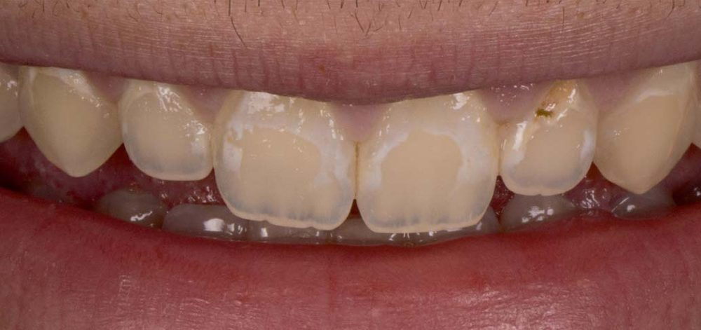
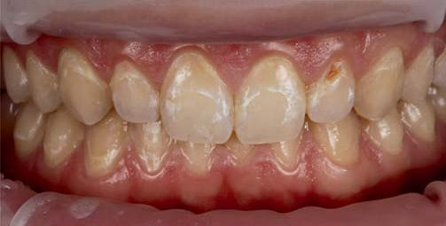
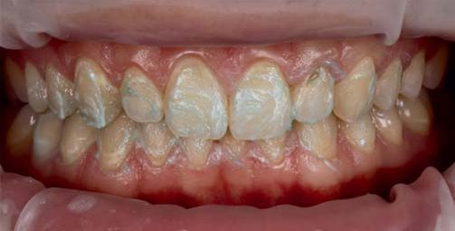
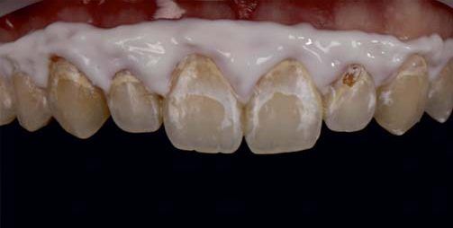
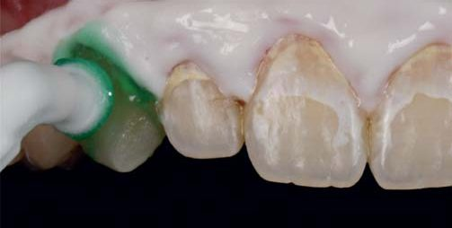
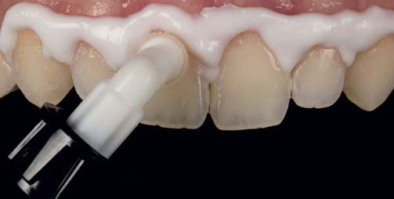
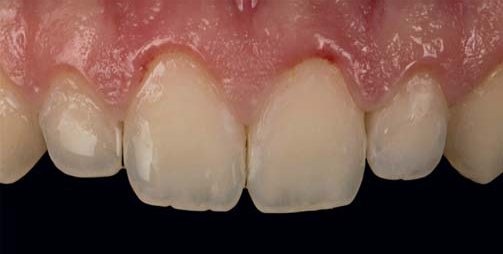
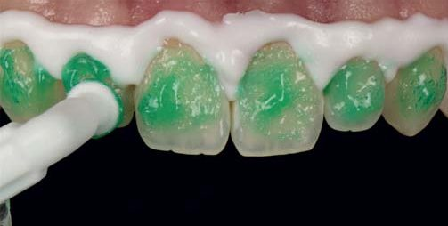
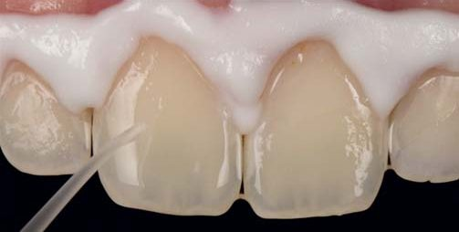
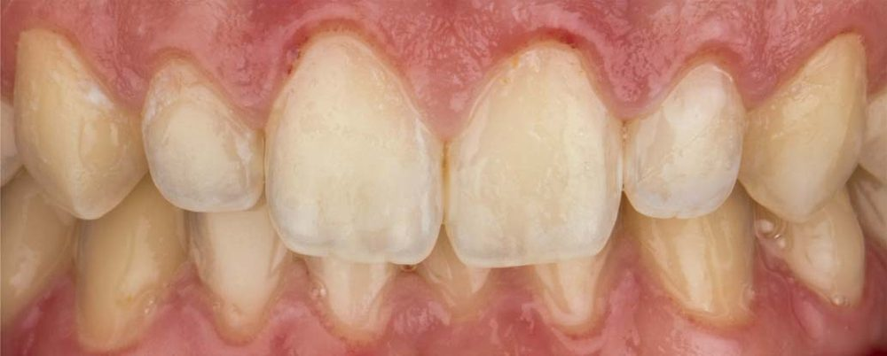

Практичний досвід · журнал «ДентАрт» 2022 №4
Маскування білих плям за допомогою Icon
Disguising of white spots using Icon
У разі недотримання всіх правил гігієни ротової порожнини або гіпофункції слинних залоз навіть на вестибулярних поверхнях зубів через накопичення нальоту можуть виникнути білі плями. Зокрема, вони можуть з’явитися у пацієнтів, які пройшли ортодонтичне лікування. Існують різні способи лікування таких уражень, але, на жаль, вони є інвазивними, тобто певна кількість зубних тканин буде втрачена. Тим часом Icon, ефективний матеріал для маскування білих плям, має мікроінвазивний вплив на оброблену поверхню емалі, запобігає подальшій демінералізації та простий у використанні.
Білі плями є раннім проявом демінералізації під видимим інтактним шаром емалі. На ранній стадії такі ураження емалі мають білуватий вигляд, що є наслідком підвищеної пористості всередині уражених тканин через втрату мінералів.1
У разі недотримання всіх правил гігієни ротової порожнини або гіпофункції слинних залоз навіть на вестибулярних поверхнях зубів через накопичення нальоту можуть виникнути білі плями.2 Зокрема, вони можуть з’явитися у пацієнтів, які пройшли ортодонтичне лікування. Це буває через те, що очищувати навколишні ділянки емалі поряд із брекетами досить складно. У процесі кількох клінічних досліджень було доведено, що після зняття брекет-системи білі плями є дуже поширеною проблемою.3,4
Якщо вжити таких заходів, як повне дотримання норм гігієни ротової порожнини та нанесення фторвмісних препаратів, є шанс стримати розвиток цих уражень на ранній стадії. І хоча карієс вдається зупинити, білуватий колір у багатьох випадках не змінюється, тому що ремінералізація відбувається у межах поверхневого шару, під яким залишається пористе тіло ураження.2 Також у демінералізовані тканини можуть просочуватися барвники, що призводить до зміни кольору плям на коричневий і, відповідно, погіршує вигляд зубів. У такому випадку до стоматологів можуть звертатися пацієнти, які бажають відновити естетичний вигляд зубів.
До стадії утворення порожнин лікування білих плям передбачає відбілювання, мікроабразію, пломбування композитом або навіть ортопедичне лікування, наприклад, встановлення вінірів, а також різні поєднання таких способів лікування.5 Усі ці варіанти є інвазивними, тобто певна кількість зубних тканин буде втрачена. Проте є мікроінвазивна альтернатива, а саме інфільтрація (Icon). Це дозволить стримати розвиток карієсу.
Інфільтрант закриває пори в уражених тканинах, і тому такий спосіб лікування не тільки стримує розвиток уражень емалі, а й поліпшує вигляд зубів, оскільки змінює колір білих плям на вестибулярних поверхнях.
Клінічний випадок
19-річний хлопець звернувся зі скаргами на зовнішній вигляд верхніх передніх зубів, а саме на білуваті ураження вестибулярних поверхонь. У підлітковому віці він проходив ортодонтичне лікування за допомогою брекет-системи, після зняття якої і виникли білі плями.
На прохання пацієнта поліпшити вигляд зубів ми замаскували білі плями матеріалом Icon.










Обговорення
Білі плями є побічним ефектом ортодонтичного лікування, який часто виникає після зняття брекет-системи, адже впродовж лікування пацієнтам складно самостійно очищати зубні поверхні повністю.3,4,6 Оскільки у питаннях естетики пацієнти стають дедалі вимогливішими, стоматологам доводиться не тільки стримувати подальший розвиток уражень, а й враховувати побажання пацієнтів щодо усунення цих уражень, які можуть псувати вигляд зубів. На відміну від інших варіантів лікування, наприклад, пломбування композитом, мікроабразії та відбілювання, Icon є мікроінвазивною процедурою, яка проводиться без використання борів і дозволяє не тільки стримати розвиток уражень, а й прибрати білі плями.
Якщо поряд є каріозні порожнини, разом із обробкою Icon можна встановити традиційну пломбу. Якщо порожнина є тільки в емалі, інфільтрант навіть робить адгезив міцнішим на зсув.7 Пломбування й інфільтрацію можна провести одним етапом. Якщо порожнина сягає дентину, спочатку треба її запломбувати, а потім перейти до процедур з Icon, адже соляна кислота, яку містить Icon-Etch, може негативно вплинути на міцність з’єднання адгезиву з дентином на зсув.8
Висновки
Icon – ефективний матеріал для маскування білих плям. Він має мікроінвазивний вплив на оброблену поверхню емалі, запобігає подальшій демінералізації та простий у використанні. Якщо поряд із білими плямами є порожнини, Icon можна успішно поєднати з традиційним пломбуванням таких порожнин.
Література
- Lee J. H., Kim D. G., Park C. J., Cho L. R. Minimally invasive treatment for esthetic enhancement of white spot lesion in adjacent tooth. J Adv Prosthodont. 2013; 5(3): 359–363.
- Paris S., Meyer-Lueckel H. Masking of labial enamel white spot lesions by resin infiltration — a clinical report. Quintessence Int. 2009; 40(9): 713–718.
- Gorelick L., Geiger A. M., Gwinnett A. J. Incidence of white spot formation after bonding and banding. Am J Orthod. 1982; 81(2): 93–98.
- Hadler-Olsen S., Sandvik K., El-Agroudi M. A., Ogaard B. The incidence of caries and white spot lesions in orthodontically treated adolescents with a comprehensive caries prophylactic regimen — a prospective study. Eur J Orthod. 2012; 34(5): 633–639.
- Kim S., Kim E. Y., Jeong T. S., Kim J. W. The evaluation of resin infiltration for masking labial enamel white spot lesions. Int J Paediatr Dent. 2011; 21(4): 241–248.
- Richter A. E., Arruda A. O., Peters M. C., Sohn W. Incidence of caries lesions among patients treated with comprehensive orthodontics. Am J Orthod Dentofacial Orthop. 2011; 139(5): 657–664.
- Jia L., Stawarczyk B., Schmidlin P. R., Attin T., Wiegand A. Effect of caries infiltrant application on shear bond strength of different adhesive systems to sound and demineralized enamel. J Adhes Dent. 2012 Dec; 14(6): 569–574.
- Jia L., Stawarczyk B., Schmidlin P. R., Attin T., Wiegand A. Influence of caries infiltrant contamination on shear bond strength of different adhesives to dentin. Clin Oral Investig. 2013; 17(2): 643–648.